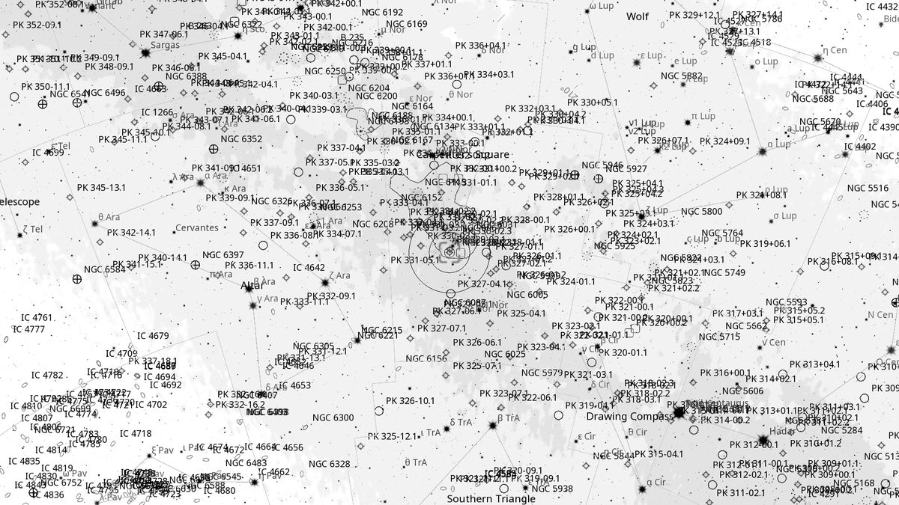
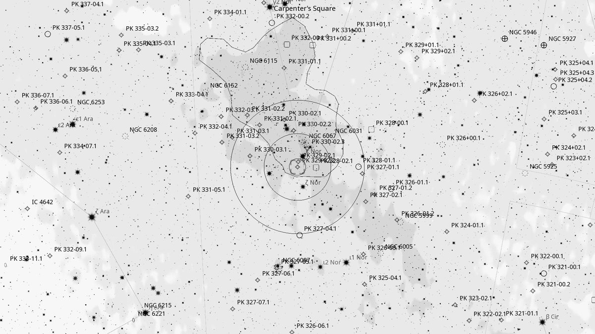
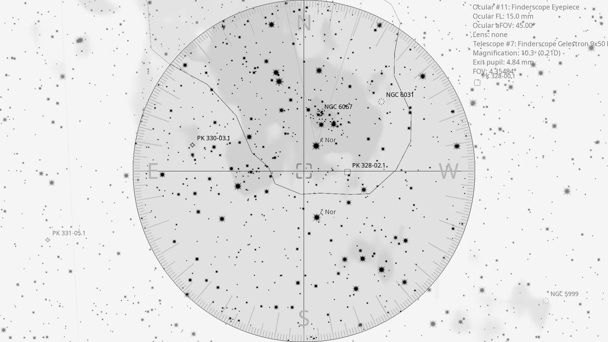
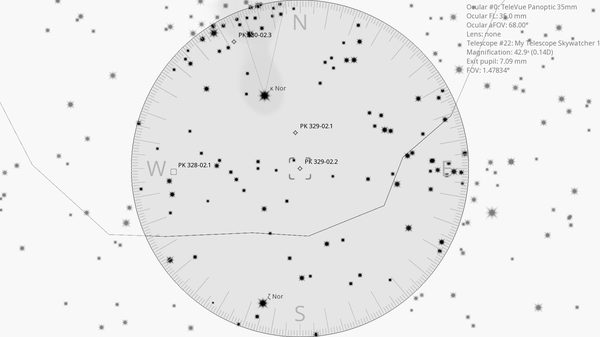

Menzel 2 (PN)
Planetary Nebula in Norma
| R.A. | Dec. | Size | Mag | SB | Cnt.St | Type | Distance | Chart |
|---|---|---|---|---|---|---|---|---|
| 16h 14m 34.5s | -54° 57′ 02.0″ | 23′′ | 13.0 | 10.7 | -- | PN | -- | -- |

Source: POSS-2 UK Schmidt Red (STScI) | Field: 10′ × 10′
Background
Menzel 2 (PK 329-02.2) is the second of Donald Menzel's 1922 planetary nebula discoveries from Peru. Glowing at 12th magnitude and about 30” in size, it sits roughly 20' southwest of Kappa Normae. Like its sibling Menzel 1, it benefits from moderate-to-high magnification and an OIII filter to bring the disk out from the Milky Way star field.
My Observing Notes
(Not yet observed — on the Norma list from the May 2026 Universe Sky Tonight column.)
References
Charts

Ultra-wide view (~25° field)

Wide-field view with Telrad rings (4°, 2°, 0.5°)

Finderscope view (9×50 RACI, ~4.4° TFOV)

Eyepiece view — 35 mm Panoptic on 12-inch f/5 (1.6° TFOV)